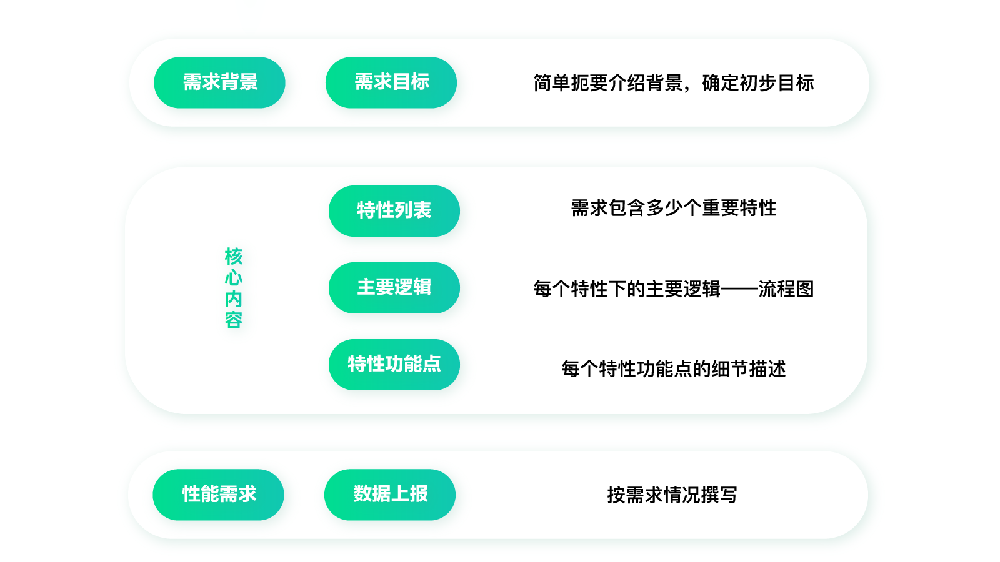
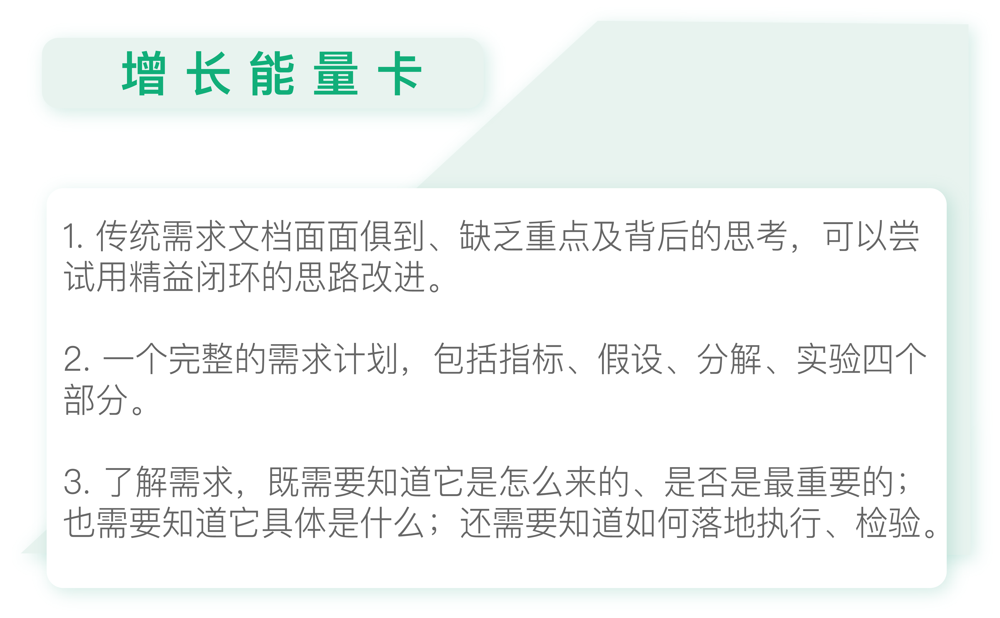

- 00 开篇词 人人都是增长官.md.html
- 01 预习 增长小白如何“弯道超车”？.md.html
- 02 预习 如何理解“增长”？.md.html
- 03 预习 不同职能如何做好增长？.md.html
- 04 预习 做增长如何处理职能间的矛盾？.md.html
- 05 正确目标找不对，天天加班也枉然.md.html
- 06 活学活用北极星指标.md.html
- 07 OKR如何助力增长？.md.html
- 08 不懂用户调研？那就对了！.md.html
- 09 调研目标：在差异性洞察中找到爆破点.md.html
- 10 数据分析：在“花式对比”中发现玄机.md.html
- 11 用户分类：围绕北极星指标细分人群.md.html
- 12 用户访谈：像侦探一样寻找破案线索（上）.md.html
- 13 用户访谈：像侦探一样寻找破案线索（下）.md.html
- 14 提炼用户差异，发现增长契机.md.html
- 15 挖掘产品优势，打破增长瓶颈.md.html
- 16 定位营销差异，抢占用户心智.md.html
- 17 一级方向：找到增长爆破点.md.html
- 18 B端产品如何调研？.md.html
- 19 全局规划增长机会.md.html
- 20 统筹全局的用户增长地图.md.html
- 21 案例解析：定义关键增长指标.md.html
- 22 正负双向洞察，找准切入点.md.html
- 23 二级机会：制定增长策略.md.html
- 24 为一家濒临破产的公司制定增长策略（上）.md.html
- 25 为一家濒临破产的公司制定增长策略（中）.md.html
- 26 为一家濒临破产的公司制定增长策略（下）.md.html
- 27 为什么指标数据怎么优化都不提升？.md.html
- 28 案例解析：打造增长闭环（上）.md.html
- 29 案例解析：打造增长闭环（下）.md.html
- 30 案例解析：唤醒沉睡用户（上）.md.html
- 31 案例解析：唤醒沉睡用户（下）.md.html
- 32 没有分解，就无缘增长.md.html
- 33 四个要点颠覆传统需求文档.md.html
- 34 三级落地：无限场景应用.md.html
- 35 手把手教你设计一次成功的实验（上）.md.html
- 36 手把手教你设计一次成功的实验（下）.md.html
- 37 积少可成多，别针换别墅.md.html
- 38 四级延续：增长组件库案例.md.html
- 39 以用户为中心增长.md.html
- 增长导航图 增长专栏的知识架构是怎样的？.md.html
- 尾声 结束意味着新的开始.md.html
- 预习答疑 你需要一张思维导图吗？.md.html
- 捐赠
33 四个要点颠覆传统需求文档
你好，我是刘津。
前面我们学习了精益闭环的思路，也讲解了不少案例。其实精益闭环的思路可以应用在各种事项上，今天我们就来讲解一个有意思的延伸应用的场景——需求文档。
“写需求文档”这件事，如果用精益闭环的思路来做，会有怎样的效果呢？现在你可能还想不明白，不过没关系，我想先从一个问题引入。
在工作中，你可能经常要接触“需求文档”，可你喜欢写、喜欢看需求文档吗？我想你的答案是否定的。
为什么会这样呢？这是因为常规的需求文档就像一本厚厚的遥控器使用手册，看起来很专业，但是你宁可自己去试着摆弄、探索各种功能按钮，也不会愿意一页一页地读下去。除非实在是遇到了搞不定的问题，你才会从使用手册里有针对性地寻找相关内容。
同样的，在实际工作中，很多研发人员也会更愿意看图文并茂的原型说明（原型图是需求文档的部分表现形式，不能代表需求文档），而不是一堆干巴巴的文字。
我们为什么需要需求文档？
但是，需求文档又十分的重要。
如果需求文档写不清楚，产品经理就无法向设计师和研发人员传达具体的要求，也就是说这会让设计师和研发人员不知道该做些什么。需求文档其实可以看作是产品经理与设计师、开发人员之间的一种“协议”，或者说是“契约”，可以约束双方。而且，后面在进行上线前的测试时，需求文档也会被用做产品质量验收的衡量标准之一。
不过由于传统型需求文档写得“没人愿意看”，时间长了，需求文档就如同鸡肋，食之无味，弃之可惜。
四个要点写好需求文档
既然需求文档这么重要，传统型需求文档又啰嗦繁杂，那么我们怎样写需求文档才能清楚、有逻辑地传达信息呢？
先来看看传统的需求文档一般包含哪些内容。我试图从网上下载现成的需求文档模版，发现内容太多了，这里只展示一个大概的逻辑框架：包含需求背景、需求目标；功能特性列表、主要逻辑、特性功能点；性能需求、数据情况等。

你有没有发现，常规的需求文档和传统的设计思路出的是同一个问题：面面俱到，却没有重点、缺乏针对性。怎么证明要做的这若干事项都是必要的，都是能达成目标的，而且是最高效的？感觉完全是需求方一个人的独角戏。而位居下游的设计师和开发人员只能照单全收，加班加点的完成，却不知道这很可能是白费时间。
现在其实已经有不少公司把“普通”产品经理和设计师划进平行的部门，平等对待。即产品经理不再是设计师的上游，而是把有能力出策略的产品经理单独提出来，放到更上游的位置，为“普通”产品经理和设计师提需求。这是因为有越来越多的人认识到，不会定策略的产品经理一样属于执行角色，应该处于下游位置。
传统的需求文档模版在多年前帮助很多小白快速上路，但却明显不再适应目前时代的发展，禁锢住了更多人前行。不过好在现在有了精益闭环的思路，我们看看如何用它解决问题。
具体的解决方法和前面做设计的思路一样，我们可以去繁求简，只保留最核心的内容，用这四点一一拆分，这样入手是不是就简单多了？而且逻辑也变得更清晰了。我们做每一件事都应该有对应的目的，而不是再像以前那样，好像是为了做功能而做功能，却不明白意义和如何验证结果。
下面我来具体讲解一下，这四点中每一点对应的内容可以怎样分解成我们最终拿到手的需求文档。
1.指标
在第一点“指标”这一模块里，需求文档需要体现出的至少有四点：需求背景、用户群体、需求所在业务模块、量化指标/非量化目标。
写需求背景，就是要说明这个需求产生的来源，阐述明白我们为什么要做这个需求。比如它对达成北极星指标有什么样的意义，是否围绕一级方向等等。这是一个产品的立足之本。
在需求背景说明后，我们还需要在指标模块里考虑用户群体。考虑用户群体，就是在考虑“谁在使用这个产品”，包含我们早先讨论过的用户范围、分类、优先级、差异性洞察等等。这些内容不仅帮助项目组其他人更好地理解需求，也影响着需求的优先级和开发方向。
接下来是需求所在的业务模块。我们如果要量化指标，必须要有个进行切分的入手之处。比如围绕公司当前阶段的北极星指标，分解到目前所在的业务模块和当前的用户需求，指标应该怎么定，分解的依据是什么。
而且，用需求所在的业务模块做划分的话，你会发现自己写需求文档会越来越轻松。因为当你在写新的需求文档时，你会发现，同种类的业务模块中的需求总有类似的。时间一久，你自然会了解这一类型的业务模块中，总会出现什么样的需求，对问题和需求的描述也会越来越清晰、完备。
之后要完成指标的量化切分。我们可以把所有的需求点按照业务模块或者针对的用户群体做好划分，这样才能一点一点整合信息，避免需求点太过零散琐碎。比如，我们如果是用业务模块做的划分，再细分下去的话，可以再分为具体功能模块，具体功能模块下才是真正的需求点。而这些需求点对应用户旅程的哪个部分，可以解决用户的什么问题，对应什么样的拆分指标以达成北极星指标呢？根据上述这些内容综合排列优先级，这样阅读需求文档的人就可以清楚、轻松地看懂哪些需求可以放在哪些版本中。
2.假设
得到量化出的需求后，我们就可以进行假设步骤了。这里分为3点：历史假设验证记录、本次数据洞察/用户洞察、本次需求假设。
在假设环节的第一步，我们要先查看历史假设验证记录。这份记录应当包括版本号、验证内容、验证时长、验证结果等信息。我们可以从之前的历史假设中分析成功或失败原因。成功的话，证明该假设成立，可以在此基础上继续分解需求点进行实验；失败的话，则证明该假设不成立，那就要避免未来再测试类似的假设。
第二步，我们看本次数据洞察/用户洞察。结合历史假设记录，以及近期的数据分析及洞察，我们发现了什么，计划本次在什么方向上继续探索呢？
第三步，再看本次需求假设，它是在前两步基础上得出的结论，即本次的假设范围。
3.分解
在得出假设后，我们需要逐步分解假设，形成需求假设拆分列表。每一个分解点里要包含具体的内容、流程图、页面及功能、后台系统交互等等。除需求假设拆分列表外，其他部分和传统的需求文档内容差别不大，只要让项目组其他人能清楚明白该如何实现即可。
到这里我们已经可以看到，使用精益闭环思路撰写的需求文档，和传统需求文档有两大主要区别：一是需要花更多的心思想明白需求是怎么来的；二是围绕目标排列优先级，只做最重要的事情。这样原先十个功能，也许现在做一到两个，也可以达到同样的效果，起到四两拨千斤的作用。
4.实验
接下来还需要拟定上线计划。里面包含：上线时间、测试方案、数据统计报表/埋点文档等等。
测试方案里需要包含测试方法、测试内容、测试时长、验证数据等。关于实验的部分，我会在下一个模块具体讲解。
这才是一个完整的需求计划，包含指标、假设、分解、实验四部分。这里面从思考到具体落地执行都有了，而传统的需求文档内容只是这里面很小的一部分，并且由于前期思考的不够深入，也容易给出错误的方向。为了得出正确的需求，我们既需要知道它是怎么来的，为什么这么重要（why），也需要知道它具体是什么（what），还需要知道如何落地执行、如何检验（how）。这明显是对产品经理提出了更高的要求。
当然，这里面已经尽量考虑到了所有的情况。可以根据实际情况适当删减，不要生搬硬套。
看，经过这样的改进，一个执行层的产品经理一下子就变成了有增长思维的增长产品经理了。是不是效果立竿见影？

思考题
你是看需求文档的人？是写需求文档的人？还是对需求文档有很多意见的人？听完这节课，你打算如何改进需求文档或对需求文档提出更多建议呢？
欢迎把你的思考和疑问通过留言分享出来，与我和其他同学一起讨论。如果你觉得有所收获，也欢迎把文章分享给你的朋友。
© 2019 - 2023 Liangliang Lee. Powered by gin and hexo-theme-book.